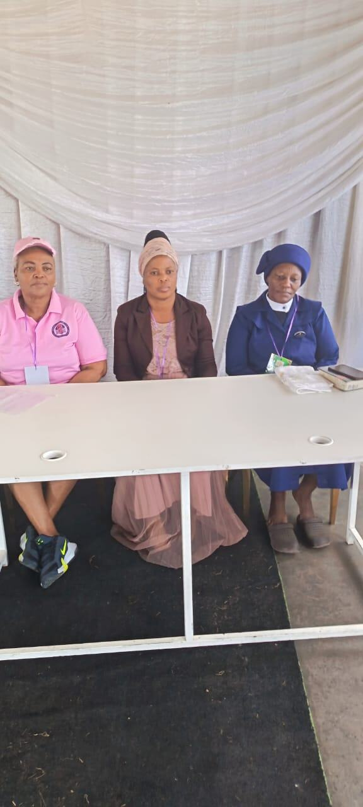

Home / About us
About usWho we are
Sibusisiwe Cancer Care Center NPC is a South African non-profit organisation established to support cancer patients and their families through practical, psychosocial and community-based assistance.
Cancer affects more than a patient's physical health
Patients and their families may also experience emotional, social, financial and practical challenges throughout the treatment journey.
Our approach is therefore centred on supporting the patient as well as the family, while helping patients navigate access to appropriate healthcare services.
Our mission
To provide accessible, compassionate and community-based support to cancer patients and their families through patient transport, psychosocial support, patient navigation, family support and cancer awareness.
Our vision
To contribute towards a community where cancer patients and their families are supported, informed and better able to navigate their cancer journey.
Our values
Compassion
We treat patients and families with dignity, empathy and care.
Accessibility
We aim to make support more accessible to people within the communities we serve.
Dignity
Every patient deserves to be treated with respect.
Community
We believe meaningful cancer support requires community involvement and collaboration.
Integrity
We are committed to responsible and transparent organisational practices.
Community-based support
Where we work today
We currently operate through a community-based model rather than from a permanent physical cancer-care facility.
This enables us to provide support through patients' homes, community activities and coordination with healthcare professionals and facilities.
Our long-term goal
One of our longer-term goals is to establish a dedicated cancer support and palliative-care centre that can provide a more permanent base for our services.
The development of such a centre will require funding, partnerships and appropriate infrastructure.
We are building towards this vision while continuing to support patients through our current community-based model.
The people behind the organisation
Busisiwe Sokhela
Founder and Chairperson of Sibusisiwe Cancer Care Center, responsible for providing organisational leadership and guiding the organisation's mission and development.
Siphesihle Buthelezi
Responsible for supporting the organisation's financial governance and oversight.
Zamajiyane Amahle Mayaba
Board member contributing to the governance and development of the organisation.
Healthcare & support network
Our work is supported through relationships with healthcare professionals and support personnel, including nurses, doctors and counsellors.

- B. L. NkosiRetired Professional Nurse
- Z. A. NcwabeRetired Enrolled Nurse
- L. SibisiRetired Professional Nurse
- B. MavusoRetired Oncology Nurse
- S. ButheleziRetired Professional Nurse
- Dr Zulu-ButheleziOncology Doctor · Part-time
- Dr N. NdebeleVolunteer
Want to support our work?
Partner with us to help us reach and support more cancer patients and families.